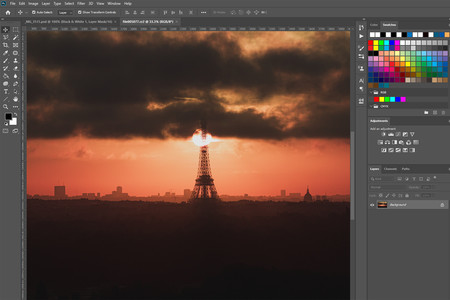

HTML es un lenguaje de marcación que sirve para definir el contenido de las páginas web. Se compone en base a etiquetas, también llamadas marcas o tags, con las cuales conseguimos expresar las partes de un documento, cabecera, cuerpo, encabezados, párrafos, etc. En definitiva, el contenido de una página web. HTML es el primer lenguaje que debe aprender cualquier persona interesada en construir un sitio web. A partir del HTML podemos pasar a muchos otros lenguajes interesantes que sirven para hacer cosas diversas y más avanzadas. Es decir, sea cual sea la tecnología, herramienta o gestor de contenido que nos hayamos propuesto aprender, o que tengamos que usar en nuestro día a día, HTML siempre será el lenguaje en el que toda web se construye y, por tanto, es de obligado conocimiento para todos.

Consideramos una página web a un documento disponible en Internet, o World Wide Web (www), codificado según sus estándares y con un lenguaje específico conocido como HTML. Es algo a lo que estamos acostumbrados a acceder si leemos este artículo, pero no todos conocen realmente su funcionamiento. A estos sitios se puede llegar a través de los navegadores de Internet, que reciben la información del documento interpretando su código y entregando al usuario la información de manera visual. Estos suelen ofrecer textos, imágenes y enlaces a otros sitios, así como animaciones, sonidos u otros. Una página web necesita un lugar donde alojarse para que cuando el usuario solicite la información desde su navegador, la información que esta contiene se cargue y aparezca en el ordenador. Es por ello que los sitios web se encuentran en un servidor web o host, que podría definirse a grandes rasgos como un gran ordenador que entrega el contenido cuando se solicita por la red. Este mismo servicio de almacenamiento se conoce como hosting.

Una página web estática es el ámbito del código fuente del sitio web se encuentra fijo, no se mueve ni cambia de ninguna manera. Cuando hablamos de “estático” también podemos referirnos a que la página web tiene un número fijo de página, es decir, que tal como fue diseñada y almacenada en el servidor web, así mismo la recibe el navegador y la ve el usuario, como un número fijo de páginas HTML. Una página web estática está compuesta por archivos HTML individuales por cada página que son pre-generados y presentados al usuario a través del navegador de la misma forma. Como una página web estática básica está compuesta por elementos como títulos, cuadros de textos, etiquetas, imágenes y otros elementos multimedia, un usuario solo puede interactuar con una página web estática a través de lo que permiten los elementos HTML, por ejemplo, haciendo clic en enlaces, botones o rellenando formularios como el clásico formulario de subscripción. No son tan complejos técnicamente como un sitio web dinámico, pero tampoco son tan versátiles y efectivos cuando se trata de entregar funcionalidad. En pocas palabras, en una página web estática, verás la misma información, diseño y contenido cada vez que la visites, a menos que alguien aplique cambios al código fuente de forma manual.

La palabra dinámica se refiere a elementos que cambian continuamente, son interactivos y funcionales, en lugar de ser simplemente informativos. Por supuesto, eso requiere utilizar más que solo código HTML y CSS. En comparación con las páginas web estáticas, que son mayoritariamente informativas, una página web dinámica incluye aspectos que se caracterizan por la interactividad y la funcionalidad, por ejemplo, los usuarios pueden interactuar con la información que se presenta en la página gracias a las instrucciones creadas a través de los lenguajes de programación y la base de datos sobre la que está construida. Los sitios web dinámicos basan su comportamiento y funcionalidad en dos tipos de programación, front-end (del lado del cliente) y back-end (del lado del servidor). Las instrucciones del lado del cliente es código JavaScript que se ejecuta en el navegador. Mientras que las instrucciones que se ejecutan del lado del servidor son instrucciones escritas en lenguajes de scripting o programación, como ASP.Net, PHP, Python, etc. y que son ejecutadas para crear lo que el usuario ha solicitado en su interacción con la página.
El Protocolo IP o Internet Protocolo (IP) es uno de los pilares básicos de Internet, ya que permite el desarrollo y transporte de paquetes de datos, aunque su recepción no está asegurada. Además, forma parte del conocido protocolo TCP/IP. Por lo tanto, el protocolo IP actúa como si fuera una “distribuidora” de datos encapsulados o empaquetados, los cuales viajan por distintas trayectorias o “caminos”, siendo por esto último por lo que no se garantiza su recepción. Tanto el protocolo TCP / IP como el protocolo IP se basan en la transmisión de datos, en forma de paquete, por las redes. Pero se diferencian en que el protocolo IP no asegura la recepción de los paquetes de datos y el protocolo TCP/ IP asegura una transmisión fiable puesto que el protocolo TCP se encarga de controlar la transferencia de datos y el protocolo IP, en este caso, se encarga de identificar la máquina con su dirección IP.
Un navegador web (en inglés, web browser) es un software, aplicación o programa que permite el acceso a la Web, interpretando la información de distintos tipos de archivos y sitios web para que estos puedan ser vistos. La funcionalidad básica de un navegador web es permitir la visualización de documentos de texto, posiblemente con recursos multimedia incrustados. Además, permite visitar páginas web y hacer actividades en ella, es decir, enlazar un sitio con otro, imprimir, enviar y recibir correos, entre otras funcionalidades más. Los documentos que se muestran en un navegador pueden estar ubicados en la computadora donde está el usuario y también pueden estar en cualquier otro dispositivo conectado en la computadora del usuario o a través de Internet, y que tenga los recursos necesarios para la transmisión de los documentos (un software servidor web). Tales documentos, comúnmente denominados páginas web, poseen hiperenlaces o hipervínculos que enlazan una porción de texto o una imagen a otro documento, normalmente relacionado con el texto o la imagen.
Una hoja de estilo es un archivo de extensión .CSS (CSS, Cascading Style Sheets = Hojas de estilo) que contempla definiciones de formato (tipo de fuente, tamaño, color de la fuente, color de fondo, párrafos, etc) de las distintas etiquetas que forman una página .HTML. Su principal ventaja es definir un mismo aspecto para todas las páginas de un sitio web. Se crea una hoja de estilo y se vinculan todas las páginas del sitio web a este archivo. Cualquier cambio efectuado en la hoja de estilo afecta instantáneamente al formato de todas las páginas vinculadas a la misma. Cuando desde el editor HTML visual se asocia un formato a un fragmento de texto o bien se convierte en un enlace lo que realmente se está haciendo es situar ese texto entre etiquetas HTML para que el navegador lo interprete y visualice adecuadamente.
Las tablas en una página web son elementos que presentan la información de manera eficaz, a eso se le puede añadir el diseño de texto y gráficos en una página HTML con filas que también contienen sus celdas con la definición de propiedades para la misma que se apliquen a toda a tabla o a los espacios que lo necesiten, el color de fondo cuenta como una de las propiedades que se le pueden añadir, el formato de celda que a su vez tiene prioridad sobre el formato de fila y este también tiene prioridad sobre el formato de tabla. Lo cierto es que la organización del texto de una página se debe a las tablas ya que contiene los elementos ideales para crear un espacio organizado en una web que desee mostrar información destacada con una disposición especial para texto e imagen, muy parecidos a una revista y esto se logra gracias a una buena maquetación de la página web.
La plantilla web es un recurso fundamental al momento de crear una sitio o página web. Ya que es la carta de presentación del espacio y es el aspecto visual que se convertirá en el imán para atraer al público objetivo o internautas. El diseño que se crea dentro de esta plantilla permite tener una estructura, donde funciona y respeta los estándares de Internet. Para crear la estructura anteriormente mencionada, se trabaja con dos técnicas, una conocida como un LENGUAJE DE ETIQUETAS, que maqueta la base y es el HTML, y el otro es un LENGUAJE DE ESTILO, que aporta en la presentación visual y ubicación de los elementos, llamado CSS. Estas plantillas son diseños realizados por empresas, diseñadores webs, programadores o agencias; donde su objetivo es vender una especie de licencia de uso; aunque hay algunas plantillas que son gratuitas, pero con funciones limitadas. La idea de usar la plantilla es que proporcionan una estructura clara, la ubicación de cada elemento, con una curva de aprendizaje baja, ahorra tiempo y crear páginas webs dentro de un molde con parámetros definidos, sin comenzar desde 0.

El diseño con frames es otra forma de diseñar la página en la cual utilizamos varios frames o marcos, (frame: en español significa "marco") de manera que cada uno de los frames consiste en un archivo html distinto. La página queda dividida en diferentes areas, cada una de esas áreas o frames es independiente del resto, y es en sí una página distinta, con un archivo html distinto; aunque las veamos todas en la misma ventana del navegador. El diseño con frames está poco recomendado hoy en día, prefiriendo usar otros tipos de diseño de página. No obstante, podemos encontrar páginas que tienen este tipo de diseño, y también podemos seguir construyendo páginas con diseño de frames. También se requiere utilizar las etiquetas "Doctype específicas para frames, vistas en la página 8.1. Etiqueta Doctype. El nuevo HTML5 no admite el diseño con frames
Un hiperenlace o hipervínculo (del inglés hyperlink), o sencillamente enlace o vínculo (link), es un elemento de un documento electrónico que hace referencia a otro recurso, como por ejemplo un punto específico de un documento o de otro documento. Combinado con una red de datos y un protocolo de acceso, un hipervínculo permite acceder al recurso referenciado en diferentes formas, como visitarlo con un agente de navegación, mostrarlo como parte del documento referenciador o guardarlo localmente. Los hipervínculos son parte fundamental de la arquitectura de la World Wide Web, pero el concepto no se limita al HTML o a la Web. Casi cualquier medio electrónico puede emplear alguna forma de hiperenlace. Hipervínculo local o interno: Un hipervínculo local o interno es un vínculo a una página que se encuentra en el mismo sitio web (sitio local). Hipervínculo externo: Un hipervínculo externo es un vínculo a otro sitio web en Internet (sitio externo). Es un vínculo a cualquier otro lugar fuera del sitio actual.
Los editores no son más que aplicaciones que permiten, que puedas crear y modificar archivos o documentos en HTML o XHTML. Existen dos tipos de software para editar páginas web, estos son los editores visuales de HTML o también conocidos como WYSIWYG (Hacen referencia a what you see is what you get) de sus siglas en inglés al español sería: lo que observas es lo que tienes.
Software para editar páginas web tipo visual o WYSIWYG: Algunos editores son muy conocidos y reconocidos, se emplean en sistemas de Windows y Linux, son de fácil uso, aunque hay personas que no les agradan. Estos programas permiten editar y crear archivos en HTML, PHP entre otros que sean requeridos. Entre los muchos beneficios de estos editores gráficos se encuentran el fácil manejo, la comprobación del código, la previsualización de la página y manuales de uso que pueden resolverte todo tipo de dudas. Para quienes no están muy familiarizados con los códigos de edición de páginas, el editor gráfico actúa como una plantilla de programa fácil, dónde solo basta rellenarla con la información y las imágenes necesarias. Todo lo que construyas o modifiques la aplicación automáticamente lo convertirá en lenguaje HTML.
Software para editar páginas web tipo texto: A diferencia del software de edición visual, en el cual no requieres muchos conocimientos de HTML para lograr modificar o editar tu página web, el editor de texto si lo requiere. Al igual que el visual, cuenta con dos formas de hacerlo, una en Windows y la otra en Linux. Es importante saber sobre códigos, ya que todo lo haces sin imágenes y sin plantilla de relleno que sirva. Lo que hagas, tampoco será guardado como HTML de forma instantánea, es tu deber crear todo desde los códigos fuente. Existe una tercera opción totalmente diferente de estas dos, esta opción es para que la tengas en cuenta si ninguno de los editores te convence o no tienes tiempo que dedicarles a estos programas. Esta opción consta de unas plantillas o templates que puedes encontrar en la web. Estos templates te permiten crear tu página a base de plantillas de relleno, sin necesidad de saber nada de códigos. Si al final te aburres de los templates porque tienen el mismo diseño compartido con otros sitios, debes entonces emplear los editores mencionados.
Aquí hablamos de un proveedor de hosting web adecuado. Crear un sitio web no es algo que deba tomarse a la ligera. Por lo tanto, debes elegir un proveedor de hosting de primer nivel que integre todas las características clave para impulsar tu proyecto web a lo más alto. Aquí hay algunos aspectos importantes que debes buscar en un proveedor de hosting web:
1. Soporte en vivo. No hay peor sensación que encontrar un obstáculo y descubrir que no hay nadie para ayudarte. Si un proveedor de hosting web no ofrece chat en vivo o una línea telefónica directa, es posible que tengas dificultades de vez en cuando.
2. Control sobre tu espacio de hosting web. Cuanto menos control tengas sobre tu cuenta, más probabilidades tendrás de tener problemas cuando tu sitio comience a crecer. Un buen ejemplo sería comparar WordPress.com con WordPress.org (la versión auto hospedada).
3. Espacio para el crecimiento. Los sitios web más exitosos le apuestan al largo plazo. Antes de comprometerte con un proveedor, asegúrate de que tenga soluciones escalables en caso de que tu sitio web empiece a necesitar mayor potencia (como servidores virtuales o cloud server).
Un servidor o server, en el lenguaje informático, es un ordenador y sus programas, que están al servicio de otros ordenadores. El servidor atiende y responde a las peticiones que le hacen los otros ordenadores. Los otros ordenadores, que le hacen peticiones, serán los "clientes" del servidor. Precisamente se llaman servidores porque sirven cosas y están al servicio de otros ordenadores. Por ejemplo si tienes un correo electrónico, lo recibes de un servidor de correo electrónico, si deseas ver una página web, la recibes de un servidor web, si trabajas en una red de ordenadores todos los servicios compartidos de la red estarán en un servidor de red y así otros muchos servicios y tipos de servidores que veremos. El modelo o arquitectura que siguen los servidores es el de cliente-servidor, es decir el cliente/s pide y el servidor proporciona los recursos o servicios.
El dominio web de tu sitio web es esencialmente el equivalente a una dirección física. De la misma manera que un satélite necesita una dirección o un código postal para dar direcciones, un navegador web necesita un nombre de dominio para dirigirte a un sitio web. Un dominio de internet se forma a partir de dos elementos principales. Por ejemplo, el nombre de dominio Facebook.com consiste del nombre del sitio web (Facebook) y la extensión del dominio (.com). Cuando una empresa (o una persona) compra un dominio web, puede especificar a qué servidor apunta el nombre de dominio.
El alojamiento web (en inglés web hosting) es el servicio que provee a los usuarios de Internet un sistema para poder almacenar información, imágenes, vídeo, o cualquier contenido accesible vía web. Es una analogía de hospedaje o alojamiento en hoteles o habitaciones donde uno ocupa un lugar específico, en este caso la analogía alojamiento web o alojamiento de páginas web, se refiere al lugar que ocupa una página web, sitio web, sistema, correo electrónico, archivos etc. en internet o más específicamente en un servidor que por lo general hospeda varias aplicaciones o páginas web. Las compañías que proporcionan espacio de un servidor a sus clientes se suelen denominar con el término en inglés web host. Se puede definir como «un lugar para tu página web o correos electrónicos», aunque esta definición simplifica de manera conceptual el hecho de que el alojamiento web es en realidad espacio en Internet para prácticamente cualquier tipo de información, sea archivos, sistemas, correos electrónicos, videos etc.
Las soluciones son un conjunto de servicios destinados a proporcionar una alta visibilidad en internet, un diseño atractivo, sencilla navegabilidad, una alta conversión visita-cliente y accesibilidad desde dispositivos móviles. Y es que nuestro desarrollo web a través del CMS permite gestionar con facilidad cualquier cambio necesario para su sitio. Dichos cambios consisten en modificar sus imágenes, cambiar o añadir textos, estructurar de forma más clara el diseño web para facilitar la navegación y crear nuevos apartados o servicios que ofrecer a sus clientes y hasta incluir enlaces. Se encargan de todos los procesos relativos al desarrollo web, incluyendo la imagen corporativa.

Una plataforma web es un lugar de Internet, portal o cibersitio, que sirve para almacenar diferentes tipos de información tanto personal como a nivel de negocios. Estas plataformas funcionan con determinados tipos de sistemas operativos y ejecutan programas o aplicaciones con diferentes contenidos, como pueden ser juegos, imágenes, texto, cálculos, simulaciones y vídeo, entre otros, que se pueden considerar agrupados en una colección de herramientas y servicios que una organización utiliza para desarrollar una estrategia digital. Las plataformas digitales también se pueden concebir como sistemas que pueden ser programados y personalizados por desarrolladores externos, como los usuarios, y de esta forma pueden ser adaptados a innumerables necesidades y asuntos que ni siquiera los creadores de la plataforma original habían contemplado, resultando un tipo de redes sociales, lo que permite mantener el contacto con amigos, familiares, usuarios en general, lo que incentiva la participación y su uso. Las plataformas digitales aspiran a posicionar la web como principal canal para adquirir contenidos. Entre sus características destacan:
• Son creadoras de contenidos y servicios: reúnen en diferentes proveedores, aplicaciones, servicios, contenidos y desarrolladores. Su valor crece en la medida que aumenta la oferta, tanto en cantidad como en calidad.
• Pueden ser abiertas o cerradas. Apple es la dominadora entre las plataformas cerradas o propietarias, mientras Android o varias compañías de telecomunicaciones aspiran a crear plataformas abiertas con diferentes grados de control sobre los desarrollos de terceros).
• Ofrecen un acceso preferente a contenidos premium. Es decir, con mayor calidad de contenidos, ancho de banda, resolución, interfaz, etc.
• Son multe apoyo y multicanal. Permite el acceso a través de web, móviles, videoconsolas, televisiones conectadas a Internet, etc.
• Dan más control de los contenidos y de sus derechos de propiedad intelectual y uso a los proveedores, además de reunir más datos de los clientes y son gestoras del usuario final.
• Negocio de pago por acceso o cobro por contenidos: conviven varios modelos de negocio con pago por contenidos, suscripciones de acceso, micropagos, licencias por contenidos asociados a equipos y apoyos, etc.
• Permiten el acceso a paquetes de contenidos o servicios: ninguna plataforma se contenta con una única oferta, los contenidos se rentabilizan en paquetes (como la televisión de pago), como también los servicios (los paquetes de internet, fijo, móvil y TV de pago de las operadoras de telecomunicaciones).

Son aquellos programas (software) que nos permiten trabajar con imágenes digitalizadas en el computador. Dichas imágenes pueden ser realizadas desde cero usando los programas de diseño, ya sea haciendo uso de sencillas Figuras geométricas que hacen una composición o de técnicas de manejo mucho más avanzadas que permiten utilizar el programa como si se contara con un lienzo y pinceles, pinturas y demás herramientas que servirían para el dibujo tradicional. Por otra parte, también es posible trabajar con imágenes que han sido capturadas mediante cámaras fotográficas o digitalizadas desde elementos tales como scanner. Las herramientas de dibujo y pintura guardan una estrecha relación entre ellas y sobre todo con las muestras de color Frontal-Fondo que tengamos seleccionados. Todas las herramientas de dibujo y pintura van a pintar y dibujar (de forma predeterminada) con el color frontal, de hecho, si tenemos cualquiera de estas herramientas activadas podemos cambiarla al cuentagotas para seleccionar cualquier color de la imagen con solo pulsar ALT.

Los mapas de bits son estructuras de datos, capaces de ser visualizadas mediante equipos de representación (como un monitor, por ejemplo). Sin embargo, ¿sabes realmente por qué son tan apreciados por los diseñadores gráficos? La respuesta a esta pregunta la entenderás con las características de los mapas de bits. Veamos acerca de estos elementos que le dan valor real a este concepto.
1. Compuesto por píxeles La principal característica de un mapa de bits es su composición mediante píxeles o cuadrados mínimos de información de color
2. Diversos usos El uso más popular del mapa de bits o ráster es en las imágenes de fotografía o el arte plano. Por lo general, puedes utilizar los mapas de bits cuando quieres trabajar fotografías con mucho detalle o alguna imagen escaneada.
3. Relación dimensión/calidad Otro aspecto que verás a lo largo de este artículo sobre las características de los mapas de bits es la relación que existe entre la dimensión y la calidad en las imágenes de este tipo.

El dibujo vectorial es un término que describe cualquier dibujo realizado con un software de ilustración vectorial como Adobe ilustrador. El dibujo vectorial se crea a partir de gráficos vectoriales, que son imagen creadas con fórmulas matemáticas. En comparación, los dibujos rasterizados (también conocidos como mapa bits o imágenes rasterizadas) se crea con pixeles coloreados. Básicamente, el dibujo vectorial no es otra cosa que una imagen gráfica que ha sido creada a partir de elementos de forma geométrica como líneas, segmentos o polígonos, que han sido definidos como vectores. Estos elementos geométricos cuentan con unos determinados atributos en cuanto a forma, posición, color, etcétera, que han sido establecidos.
En términos de experiencia visual, la animación 2D es comparativamente poco realista. Además, se procesa en un espacio bidimensional, tratando solo con la longitud y el ancho. En 3D, las imágenes creadas se definen en 3 dimensiones: largo, ancho y alto. Este hecho les otorga una sensación realista y ayuda a crear una percepción de profundidad. En la animación tradicional, la animación 2D se considera más complicada que la animación 3D porque presenta dos requisitos indispensables para los animadores. Que, por un lado, dibujen 24 cuadros por segundo. Y que, por otro lado, tengan un conocimiento profundo de los principios de la animación. Es decir, la anatomía, los movimientos y la física detrás de esos movimientos. Los animadores deben manipular cada fotograma en una animación 2D, lo que lo hace más largo en la mayoría de las marcas y un poco más complejo que la animación 3D. la mayor diferencia entre la animación 2D y 3D es su proceso de animación de video. Si dividimos el proceso en 3 etapas: preproducción, producción y posproducción, se puede ver cuánto más compleja y lenta es la animación 3D respecto a la 2D.
La edición digital de imágenes se ocupa de la edición apoyada en computadoras de imágenes digitales, comúnmente un gráfico rasterizado, en la mayoría de los casos fotos o documentos escaneados. Estas imágenes son editadas para optimizarlas, manipularlas, retocarlas, o agregar algún objeto o cosa que está imagen previamente no poseía con el fin de alcanzar la meta deseada. Una de las metas puede ser eliminar las fallas que pueden haberse producido durante el escaneo o al fotografiar, por ejemplo sobreexposición, baja exposición, falta de contraste, ruido en la imagen, efecto de los ojos rojos, paradoja de las líneas paralelas en perspectiva, etc. Estas fallas se producen por defectos técnicos en los aparatos fotográficos, escáner, condiciones de trabajo precarias, fallas en la operación u originales defectuosos.
Un editor de video no lineal es un editor de video que permite colocar archivos de audios y video que permite colocar archivos de audio y video en múltiples pistas usando cualquier secuencia deseada. Esto significa que los archivos no tienen que comenzar estrictamente uno a otros: pueden suponerse y usarse simultáneamente en la misma escena. Se denomina sistema de edición no lineal en la terminología del vídeo y sistema de montaje no lineal en la terminología del cine a un sistema de edición por el cual se pueden ampliar o reducir cualquier secuencia de una edición o montaje sin alterar ni dañar las secuencias o cuadros posteriores. Si además se puede acceder a cualquier punto del material bruto instantáneamente, sin recorrer las tomas previas, se denomina Sistema de edición no lineal de acceso aleatorio. En ocasiones es considerado equivalente en el ámbito del audio/video al procesamiento de textos, por lo cual también se lo denomina edición de vídeo en desktop.
Un editor de sonido es un creativo responsable de seleccionar e integrar grabaciones de sonido en preparación para la mezcla o grabación original del sonido final de un programa de televisión, película, videojuego, o cualquier producción que involucre sonido grabado o sintético. La edición de sonido se desarrolló debido a la necesidad de reparar las grabaciones de sonido incompletas, no dramáticas, o técnicamente inferior de las primeras películas sonoras, y que con el pasar de los años se han convertido en obras de la industria cinematográfica, en donde los editores de sonido han implementado metas estéticas en el diseño del sonido cinematográfico. Un Editor Gráficos en informática, software o un paquete de estos dotados de herramientas que permiten la edición apoyada en computadores de imágenes digitales, en la mayoría de los casos fotos o documentos escaneados. Estas imágenes son modificadas para optimizarlas, manipularlas, retocarlas, etc. Con el fin de alcanzar la meta deseada.

Un sistema de administración de contenido de imagen audio y video a menudo funciona en el servidor del sitio web. Muchos sistemas proporcionan diferentes niveles de acceso dependiendo del usuario, variando si es el administrador, editor, o creador de contenido. El acceso al CMS se realiza generalmente a través del navegador web, y a veces se requiere el uso de FTP para subir contenido, normalmente fotografías o audio. Los creadores de contenido publican sus documentos en el sistema. Los editores comentan, aceptan o rechazan los documentos. El editor en jefe es responsable por publicar el trabajo en el sitio. El CMS controla y ayuda a manejar cada paso de este proceso, incluyendo las labores técnicas de publicar los documentos a uno o más sitios. En muchos sitios con CMS una sola persona hace el papel de creador y editor, como por ejemplo los blogs.
Software libre
El software libre tiene que ir acompañado de su código fuente, permitiendo a los usuarios su total acceso y la absoluta libertad de distribuirlo, modificarlo, copiarlo y usarlo. Todo ello garantiza cuatro libertades que son de vital importancia para Richard Stallman por impulsar la cooperación y, en general, la solidaridad entre la sociedad. Éstas son:
• La libertad para ejecutar el programa sea cual sea el propósito.
• La libertad para estudiar el código fuente y el funcionamiento del programa y adaptarlo a tus necesidades.
• La libertad para ayudar a los demás a partir de la distribución de copias exactas del programa.
• La libertad para mejorar el programa y luego publicarlo para crear copias modificadas, sin estar obligado a notificarlo a nadie.
Software privativo
El software privativo es, por el contrario, cualquier programa informático en el que el código fuente no está disponible impidiendo que los usuarios puedan ejecutarlo, estudiarlo, modificarlo y copiarlo. Pero, a pesar de que su libertad está totalmente restringida, también le acompañan una serie de ventajas:
• Facilidad de adquisición.
• Existencia de programas más específicos para cualquier actividad o tarea.
• Mayor desarrollo de los programas al contar una mayor inversión.
• Mayor compatibilidad con el hardware.